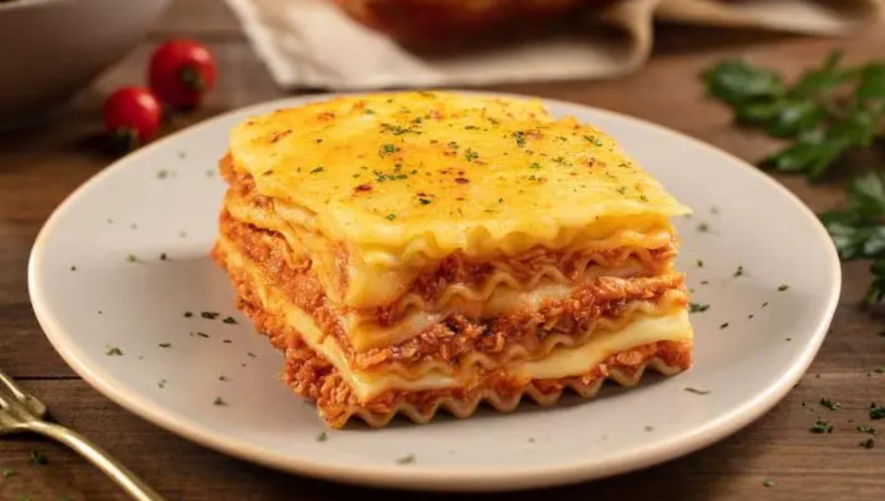

Lasaña
La lasaña es un plato tradicional de la cocina italiana que se originó en la región de Emilia-Romaña. Su historia se remonta a la Edad Media, cuando ya se preparaban platos con capas de pasta. Con el tiempo, la receta evolucionó y se popularizó como la conocemos hoy: con capas de pasta, salsa de carne, salsa bechamel y queso. La lasaña boloñesa, una de las más famosas, es considerada un símbolo de la gastronomía italiana. Con la expansión de la cocina italiana por el mundo, la lasaña se adaptó a distintos gustos y culturas, pero siempre conservando su esencia de capas y sabores intensos. Hoy en día, es uno de los platos italianos más reconocidos y apreciados a nivel internacional.
Ingredientes
- 3 Cucharadas de aceite de oliva
- 2 Cebollas medianas cortadas en cuadraditos
- 1 Diente de ajo cortado finamente
- 2 Zanahorias ralladas o cortadas en cuadritos
- 1 Bandeja de carne molida (250 g)
- 1 Tableta de caldo de costilla
- 2 Sobres de salsa de tomates
- 1 Taza de agua caliente
- 1 Cucharada colmada de orégano
- 1/3 Cucharadita de comino
- Sal
- Pimienta
- 1 Sobre de salsa blanca
- 1 Atadito de perejil
Paso a paso
- Para la masa, amasar las dos harinas con los huevos hasta dejar una masa homogénea y lisa. Cubrir y dejar descansar por una hora.
- Pasado el tiempo, sobar la masa en dos milímetros y cortar en rectángulos de 15 cm x 30. (según la fuente que se vaya a usar por la cocción). Cocinar en agua hirviendo y salada por dos minutos, colar y enfriar en agua con hielo y aceite común. Colar y dejar secar un poco.
- Para la salsa bechamel, calentar en una olla la leche mientras que en otra olla derretir la manteca y agregar la harina y mezclar bien. Dejar cocinar por 3-4 min. Adicionar la leche y dejar cocinar por unos 5 minutos, hasta que la salsa tome espesor y condimentar con sal, pimienta y nuez moscada.
- Para la salsa bolognesa, derretir en una olla de barro o de aluminio la panceta, agregar el aceite de oliva, las verduras picadas y dejar cocinar hasta que se dore el todo -sin quemar- y agregar la carne y hacerla dorar.
- En una fuente apta para horno poner un poco de bolognese, un poco de bechamel y una capa de pasta, repetir ahora con las dos salsas , la mozarela y el queso rallado así por 4 o 5 veces según la altura que se le quiere dar terminando en la última capa con los mismos ingredientes.
- Cocinar en horno precalentado a 180 ºC por 35 a 40 minutos. Dejar descansar 10 minutos antes de servir.